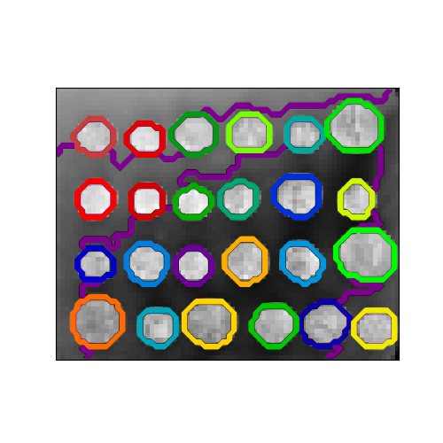

Note
Click here to download the full example code or run this example in your browser via Binder
A demo of structured Ward hierarchical clustering on an image of coins¶
Compute the segmentation of a 2D image with Ward hierarchical clustering. The clustering is spatially constrained in order for each segmented region to be in one piece.
Out:
Compute structured hierarchical clustering...
Elapsed time: 0.21451330184936523
Number of pixels: 4697
Number of clusters: 27
# Author : Vincent Michel, 2010
# Alexandre Gramfort, 2011
# License: BSD 3 clause
print(__doc__)
import time as time
import numpy as np
from distutils.version import LooseVersion
from scipy.ndimage.filters import gaussian_filter
import matplotlib.pyplot as plt
import skimage
from skimage.data import coins
from skimage.transform import rescale
from sklearn.feature_extraction.image import grid_to_graph
from sklearn.cluster import AgglomerativeClustering
# these were introduced in skimage-0.14
if LooseVersion(skimage.__version__) >= '0.14':
rescale_params = {'anti_aliasing': False, 'multichannel': False}
else:
rescale_params = {}
# #############################################################################
# Generate data
orig_coins = coins()
# Resize it to 20% of the original size to speed up the processing
# Applying a Gaussian filter for smoothing prior to down-scaling
# reduces aliasing artifacts.
smoothened_coins = gaussian_filter(orig_coins, sigma=2)
rescaled_coins = rescale(smoothened_coins, 0.2, mode="reflect",
**rescale_params)
X = np.reshape(rescaled_coins, (-1, 1))
# #############################################################################
# Define the structure A of the data. Pixels connected to their neighbors.
connectivity = grid_to_graph(*rescaled_coins.shape)
# #############################################################################
# Compute clustering
print("Compute structured hierarchical clustering...")
st = time.time()
n_clusters = 27 # number of regions
ward = AgglomerativeClustering(n_clusters=n_clusters, linkage='ward',
connectivity=connectivity)
ward.fit(X)
label = np.reshape(ward.labels_, rescaled_coins.shape)
print("Elapsed time: ", time.time() - st)
print("Number of pixels: ", label.size)
print("Number of clusters: ", np.unique(label).size)
# #############################################################################
# Plot the results on an image
plt.figure(figsize=(5, 5))
plt.imshow(rescaled_coins, cmap=plt.cm.gray)
for l in range(n_clusters):
plt.contour(label == l,
colors=[plt.cm.nipy_spectral(l / float(n_clusters)), ])
plt.xticks(())
plt.yticks(())
plt.show()
Total running time of the script: ( 0 minutes 0.522 seconds)